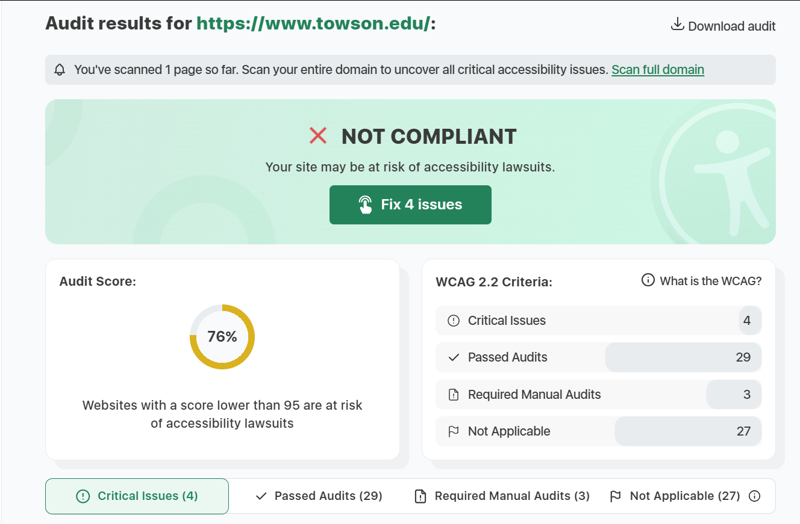
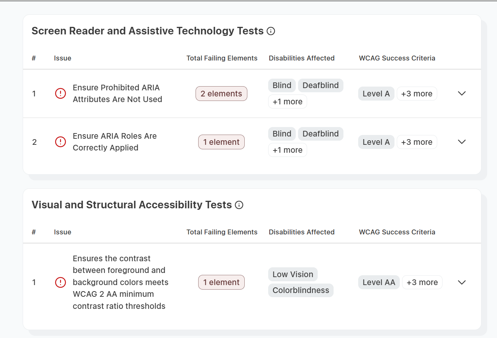

What is the URL of the website?
https://www.towson.edu/
What is the name of the website?
The name of teh website is "Towson.edu"
Who is the site's target audience?
The site's target audience is anyone who is interested in learning about Towson University. This could include current students, students who are interested in attending, alumni, parents of students, or even staff members.
How is the site organized?
The website uses hierarchical organization. I say it uses this type of organization because it has a very clear home page, with links to other important sections of the website.
Which CRAP design principle does this use?
One principle that the site uses is repetition. Throughout the entire site the color scheme remains the same, that being the school's colors of black and gold. This keeps the website consistent and friendly, and also helps embrace the school spirit.
What is the audit score according to the accessibility checker?
The audit score of the website is a 76% according to the accessibility checker. The issues that the website has all seem to affect people with seeing problems. 3 of the 4 failing elements affects blind and deafblind people, while the other failing element affects low vision and colorblindness.
What is the site's effectiveness? Does it support users in completing actions accurately?
In my opinion the website is very effected and does allow it's users to complete any actions they may want accurately. There are clear links to guide you to anywhere that you may want to go on the website. The website also has a very clean layout making it easy to navigate through to find the desired information.
What is the site's efficiency? Can users can perform tasks quickly?
I also think that the website is pretty efficient due to it's design and how simple it is. You can quickly find all the links that lead you to anywhere you could want to go. There is also a search bar inside the website that you can use to search up what information you need.
How is the engagement? Is it pleasant to use and appropriate for its industry/topic?
I find the website to be engaging to use and that it is appropriate for its topic. The website has a nice color scheme that stays consistent and that looks very appealing which makes it engaging. I think it is appropriate for its topic because throughout the website are pictures of the school and its students. It is also very informational which is good for anyone that is looking to learn about the university.
My recommendation
If I had to recommend anything to help improve the website it would be to make it more accessible for people with seeing disabilities. This is my only recommendation because I didn't personally see anything wrong with the site however when it was scanned by the accessibility checker, that is where the site lacked. I think that if the website made accommodations to those weaknesses than it could be perfect.
Screenshots of the website and it's accessibility attributes
 